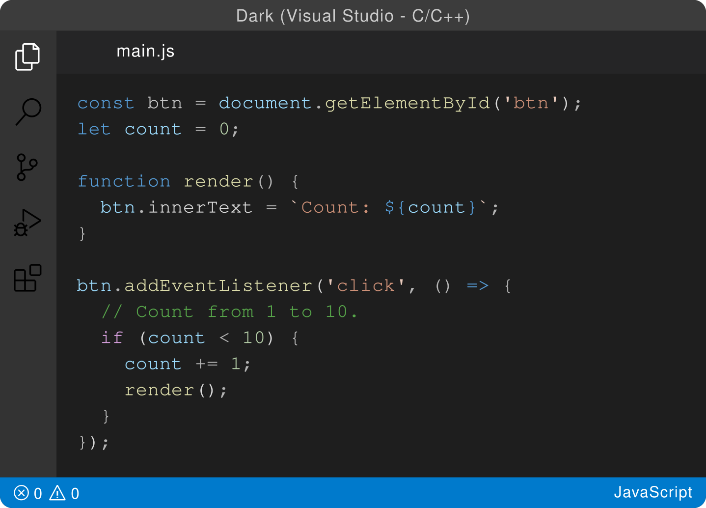
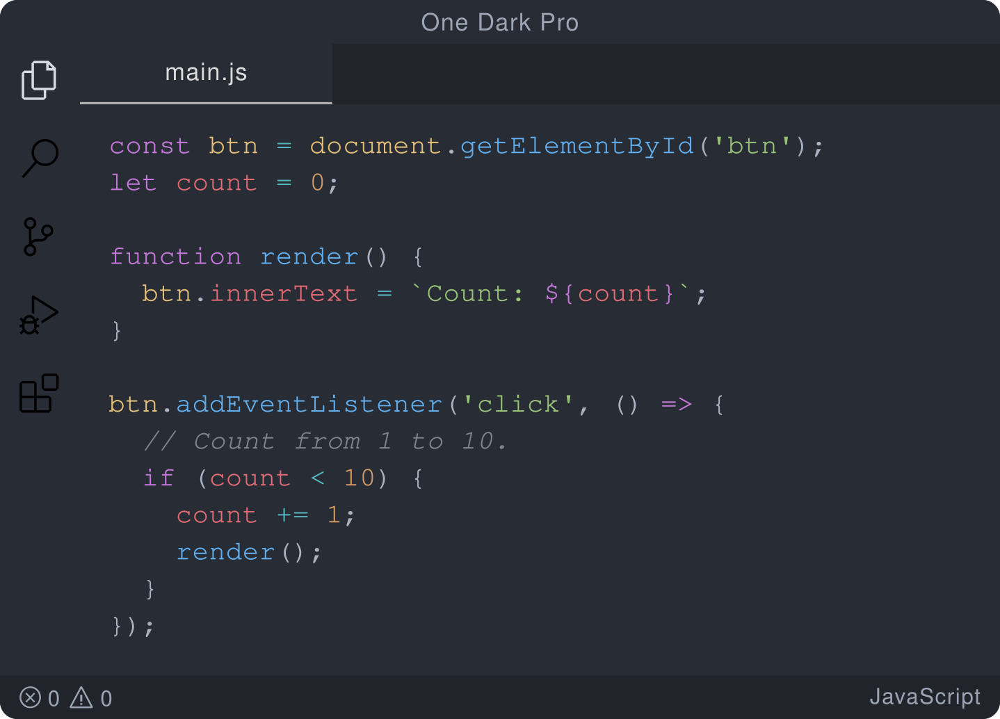
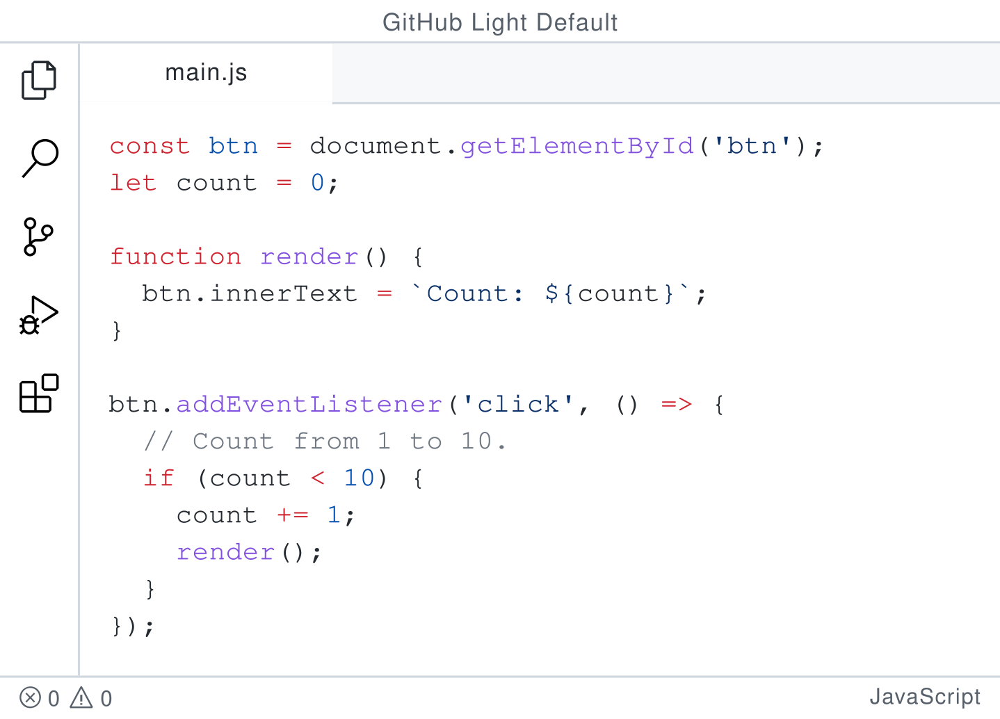
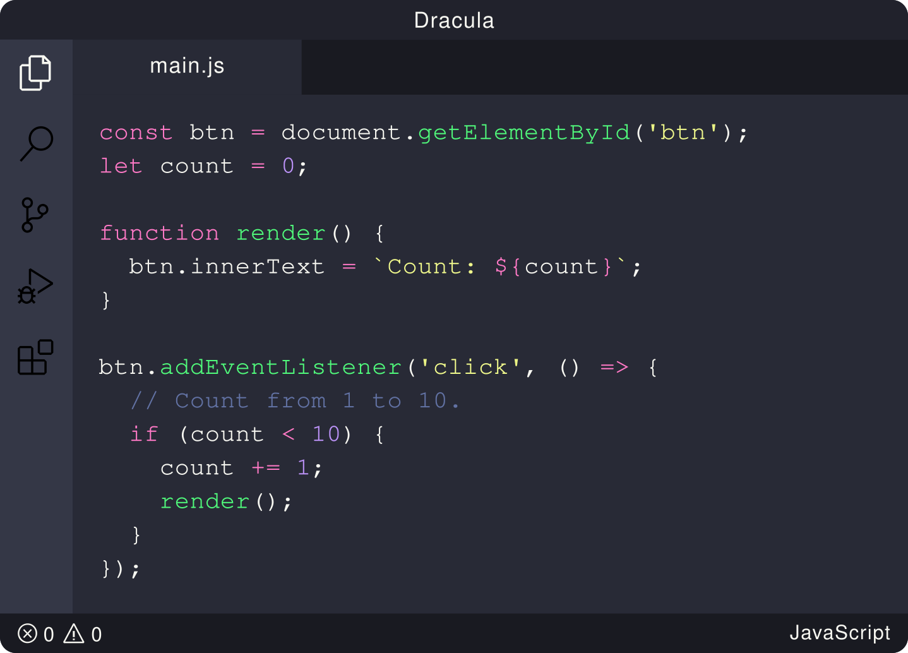
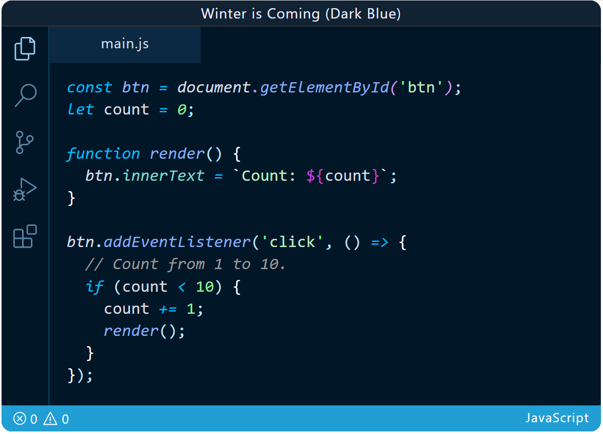
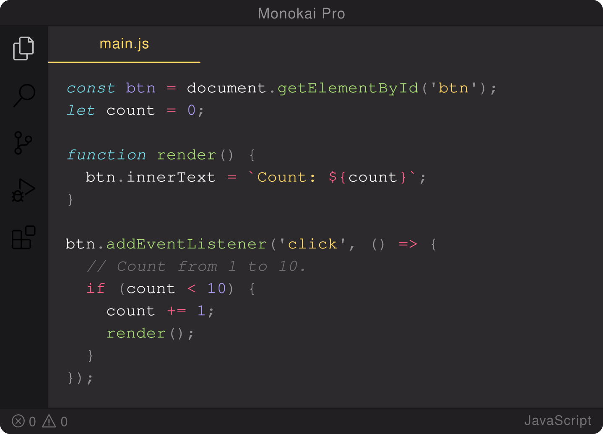
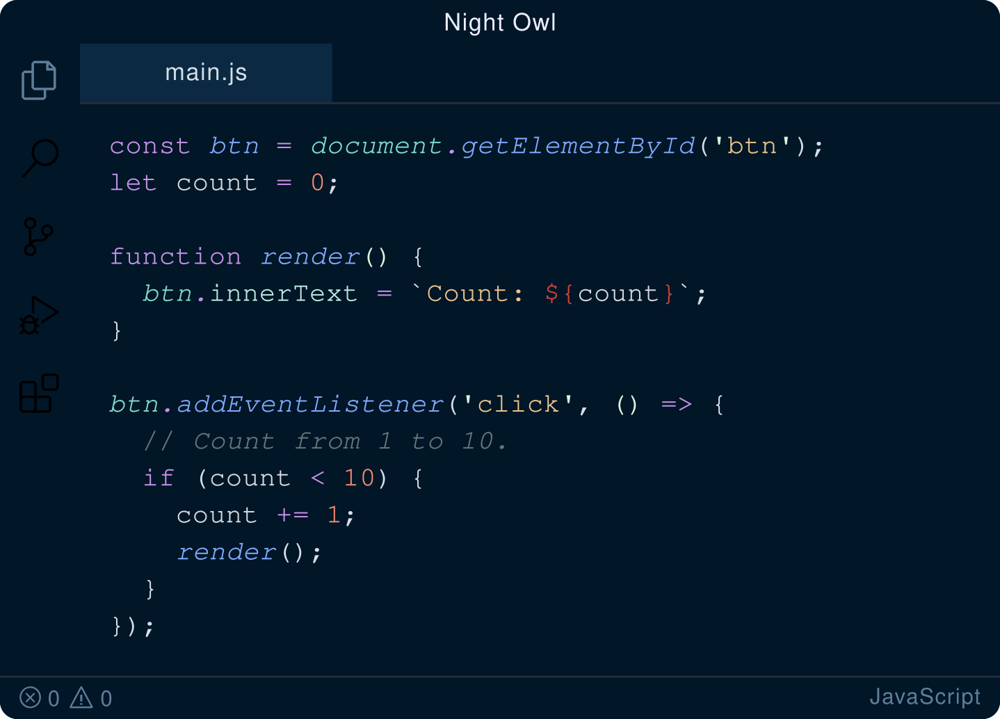
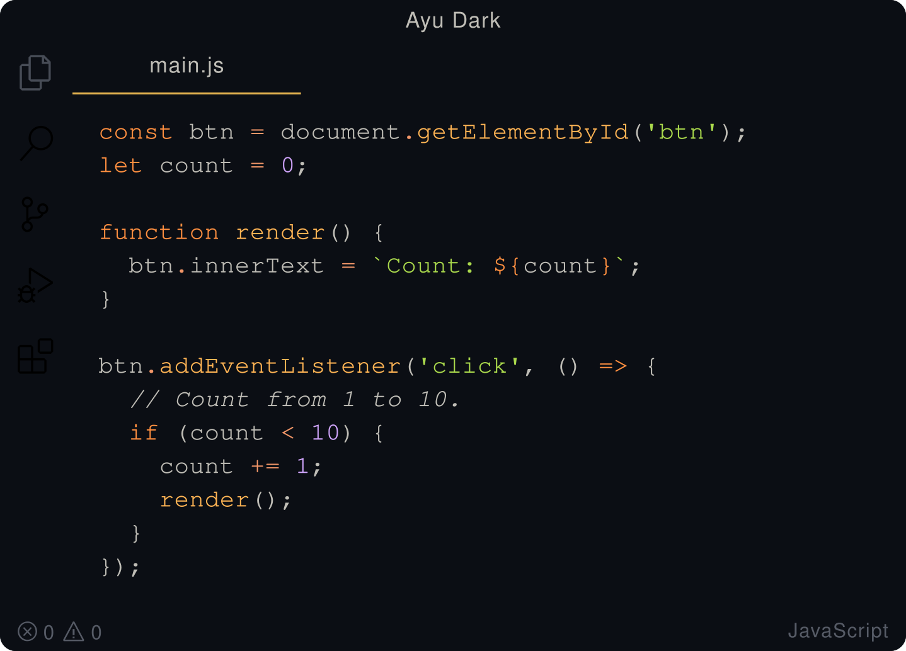
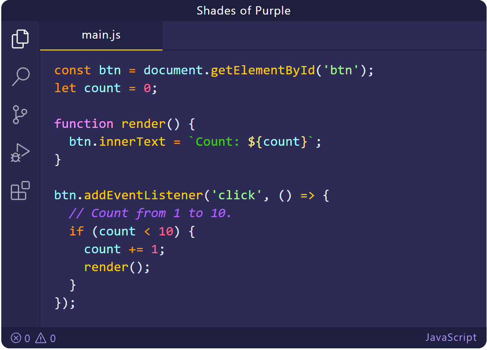
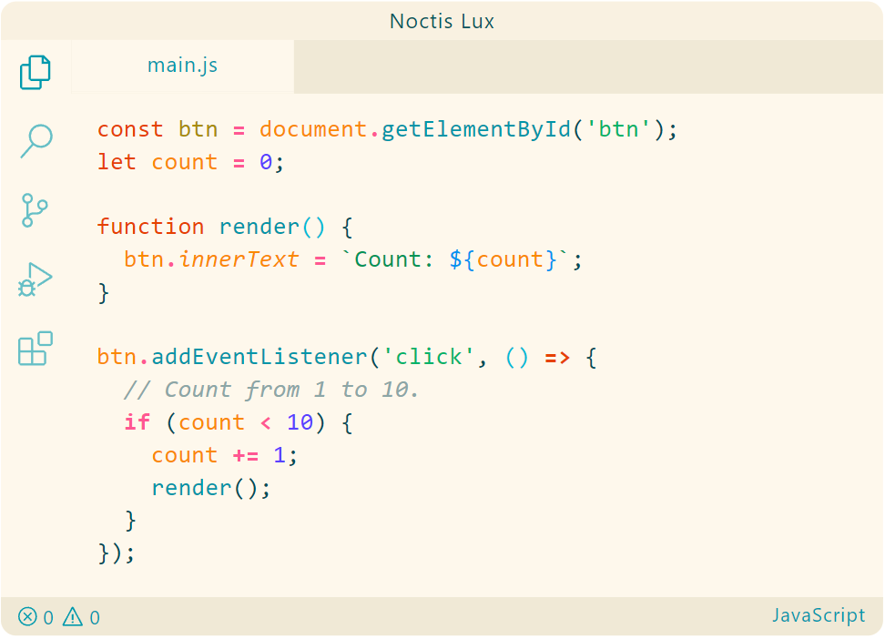

VS Code для вёрстки
Новая тема от Microsoft. Доступна в тёмной и светлой версиях, а ещё в фирменных расцветках Visual Studio 2017.
Знаменитая тема от Atom. Славится цветовыми сочетаниями и приятным стилем. Подойдёт для любителей тёмного режима. Доступна в четырёх версиях.
Для любителей классических тем GitHub. Доступна в девяти версиях.
Ещё один вариант тёмной темы, которую часто используют дизайнеры. Доступна в классической тёмной и мягкой версиях с менее контрастными цветами.
Для любителей синенького. Доступна в тёмной, светлой и версии без курсива.
Цель темы — фокусировка только на коде. Доступна в шести версиях.
Тема для ночного и дневного использования, где подобран идеальный контраст цвета. Удобно, когда вы любите поработать ночью. Доступна в тёмной, светлой и версии без курсива.
Простая тема с яркими цветами. Доступна в шести версиях — светлой, тёмной, с рамкой и версии mirage с серым фоном.
Тема с яркими оттенками фиолетового. Благодаря хорошо подобранным цветовым выделениям, удобно ориентироваться в коде. Доступна в тёмной и очень тёмной версиях.
Коллекция светлых и тёмных тем с хорошим сочетанием тёплых и холодных оттенков. Доступна аж в 11 версиях. Точно найдёте на свой вкус.
